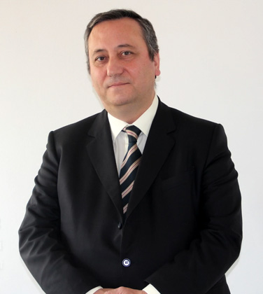

|
 |
Prof. Dr. Enrique Alarcón
Director del Proyecto Corpus Thomisticum
editor@thomistica.info
|
|
|
|
|
|
| |
|
| |
Enrique Alarc�n Moreno es presidente de la Fundaci�n Tom�s de Aquino y director de Corpus Thomisticum. Es profesor de Metaf�sica en el Departamento de Filosof�a de la Universidad de Navarra, y colabora en diversas agencias estatales de Europa y Am�rica como evaluador de proyectos cient�ficos.
Pertenece, entre otros, al comit� cient�fico asesor de la colecci�n «Scholastica Thorunensia» (Uniwersytet Mikołaja Kopernika, Toruń); al de la «Colecci�n de Pensamiento Medieval y Renacentista» (Universidad de Navarra - EUNSA); al de la revista «Esp�ritu» (Fundaci�n Balmesiana, Barcelona); y al de «Soriamuseum», gestora del Museo «Magna Mater», de la Villa Romana de Cuevas de Soria. As� mismo, es revisor cient�fico de numerosas revistas de su especialidad, y miembro correspondiente de la Pontificia Accademia di San Tommaso d'Aquino y de otras sociedades acad�micas.
Ha sido Investigador Principal del proyecto «The Way of Saint James and the Apostolic Tomb». Ha dictado cursos y conferencias, y ha realizado estancias de investigaci�n y trabajo acad�mico, en Notre Dame, Oxford, Par�s, Roma, Buenos Aires, Santiago de Chile, Lima, Bogot�, Mil�n, Toruń, Cracovia, etc. Son ampliamente conocidas su edici�n de las «Opera omnia» de Tom�s de Aquino y del «Index Thomisticus» de Roberto Busa, as� como su repertorio bibliogr�fico «Bibliographia Thomistica».
- «Sujeto y tiempo en la Cr�tica de la Raz�n Pura». Anuario Filos�fico 20/1 (1987) 199-206.
- «La cultura de la empresa como factor de progreso». Servicio de Documentaci�n del Seminario Permanente Empresa y Humanismo 0 (1987) 23-28.
- «La dignidad �tica de la Econom�a». Servicio de Documentaci�n del Seminario Permanente Empresa y Humanismo 3 (1987) 11-19.
- Rese�a de B. Bernardi, «Studio sul significato di esse forma essentia nel commento al primo Liber Sententiarum di San Tommaso de
Aquino». Anuario Filos�fico 21 (1988) 187-188.
- Rese�a de P. Hossfeld (ed.), «Alberti Magni Physica, lib. I-IV». Anuario Filos�fico 21 (1988) 196-198.
- Rese�a de M. Pe�a, «La psicolog�a y la empresa». Servicio de Documentaci�n del Seminario Permanente Empresa y Humanismo 5 (1988) 43-44.
- «Naturaleza, esp�ritu, finalidad. Implicaciones del principio de no contradicci�n en Arist�teles». Anuario Filos�fico 23 (1990) 125-131.
- «Plat�n y la filosof�a actual. Entrevista con Giovanni Reale». Atl�ntida 2/6 (1991) 190-194 (=62-66).
- «Inmanencia, transcendencia y fundamento. La l�gica interna del Scriptum super libros Sententiarum de Santo Tom�s de Aquino». R. Alvira, A. J. G. Sison (eds.), El hombre:
inmanencia y transcendencia, vol. 2 (Eunsa, Pamplona, 1992) 1021-1041.
- «Una cuesti�n de m�todo: Consideraciones previas a la interpretaci�n de Santo Tom�s de Aquino». Th�mata 10 (1992) 387-401.
- «San Alberto Magno y la Epistola Aristotelis de principio universi esse. Una nota hist�rica sobre el alcance y l�mites del conocimiento racional de Dios en el
pensamiento medieval». J. Ayala (ed.), Actas del I Congreso Nacional de Filosof�a Medieval (Sociedad de Filosof�a Medieval, Zaragoza, 1992) p. 181-192.
- «San Alberto Magno y la Epistola Alexandri de principio universi esse. Los or�genes hist�ricos de la reducci�n al ser y el aristotelismo pante�sta». T�picos 3
(1992) 77-95.
- «Sobre el m�todo en Metaf�sica». J. Aranguren, J. J. Borobia, M. Lluch (eds.), Fe y raz�n (Eunsa, Pamplona, 1999) p. 267-277.
- «El principio de contradicci�n y la estructura del ente en Arist�teles». Acta Philosophica 8/2 (1999) 271-277.
- «Presente y acci�n en Arist�teles». T�picos 17 (1999) 261-270.
- S. Thomae de Aquino Opera omnia. Ed. E. Alarc�n (Corpus Thomisticum, Pamplona, 2000 ss.)
- «El debate sobre la verdad». P. P�rez-Ilzarbe, R. L�zaro (eds.), Verdad, bien y belleza (Cuadernos de Anuario Filos�fico. Serie Universitaria 103, Pamplona, 2000) p. 35-62.
- «Tom�s de Aquino y la Metaf�sica perdida de Arist�teles». Anuario Filos�fico 33 (2000) 557-571.
- «Bibliographia Thomistica» (Corpus Thomisticum, Pamplona, 2001-2008)
- «El conocimiento de Dios: Arist�teles y S. Juan de la Cruz». J. Aranguren, J. J. Borobia, A. Llano, M. Lluch (eds.), Comprender la religi�n (Eunsa, Pamplona, 2001) p. 17-328.
- «Optimae editiones operum Thomae de Aquino» (Corpus Thomisticum, Pamplona, 2002 ss.)
- S. Thomae de Aquino Summa Theologiae (KrystalOP, Praga, 2002) [Texto latino de la edici�n Leonina corregida publicada por E. Alarc�n].
- «El proyecto Corpus Thomisticum: descripci�n y perspectivas». Anuario Filos�fico 35/3 (2002) 791-801.
- «Corpus Thomisticum». Notiziario Societ� Internazionale Tommaso d'Aquino 16 (2002) 35-36.
- «Fontes vitae Thomae de Aquino» (Corpus Thomisticum, Pamplona, 2003 ss.)
- «Santo Tom�s de Aquino». R. Domingo (ed.), Juristas universales, t. 1: Juristas antiguos (Marcial Pons, Madrid - Barcelona, 2004) 464-468.
- - ; et alii, «Bibliographie der thomistischen Literatur f�r das Jahr 2003». Doctor Angelicus 4 (2004) 253-285.
- «Catalogi antiquissimi operum Thomae de Aquino» (Corpus Thomisticum, Pamplona, 2004 ss.)
- Busa, R., «Index Thomisticus». Ed. E. Bernot, E. Alarc�n (Corpus Thomisticum, Pamplona, 2005)
- - ; Berger, D.; Vijgen, J., «Bibliographia Thomistica 2004». Doctor Angelicus 5 (2005) 237-314.
- «Conservadores y progresistas». Preg�n Siglo XXI 26 (2005) 74-76.
- - ; et alii, «Bibliographia Thomistica 2005». Doctor Angelicus 6 (2006) 301-411.
- Sch�tz, L., «Thomas-Lexikon». Ed. E. Alarc�n (Corpus Thomisticum, Pamplona, 2006).
- Фома Аквинский, Сумма
теологии. Часть 1: Вопросы 1-64. Ред.
Н. Побковuц, А. В. Апплонов (Савин,
Москва, 2006) L, 818 pp. [Texto latino de la edici�n Leonina corregida publicada por E. Alarc�n].
- Tom�s de Aquino, «Sobre os anjos (Tractatus de substantiis separatis)». Intr.: P. S. Faitanin. Trad.: L. Astorga (S�timo Selo, Rio de Janeiro, 2006) 229 pp. [Texto latino reproducido de la edici�n de Alarc�n].
- - (ed.), «Thomism Today». N�mero monogr�fico de Anuario Filos�fico 39/2 (2006) 293-613.
- «Thomism Today: Introduction». Anuario Filos�fico 39/2 (2006) 297-301.
- «Advances in Our Historical Knowledge of Thomas Aquinas». Anuario Filos�fico 39/2 (2006) 371-399.
- «Conciencia y sociedad». Preg�n Siglo XXI 27 (2006) 62-63.
- - (ed.), «Thomistica 2006» (Nova et Vetera, Bonn, 2007) 466 pp.
- Rese�a de J. Egido Serrano, «Tom�s de Aquino a la luz de su tiempo». Thomistica 2006 n. 143.
- «Autonom�a y libertad». Preg�n Siglo XXI 28 (2007) 47-48.
- Rese�a de J. Egido Serrano, «Tom�s de Aquino a la luz de su tiempo». Anuario Filos�fico 40/3 (2007) 731-732.
- Фома Аквинский, Сумма теологии. Часть 1: Вопросы 65-119. Ред. Н. Побковuц, А. В. Апплонов (Савин, Москва, 2007) 652 pp. [Texto latino de la edici�n Leonina corregida publicada por E. Alarc�n].
- «Thomistica: un nuevo anuario internacional de bibliograf�a tomista». Anuario de Historia de la Iglesia 17 (2008) 387-388.
- Tom�s de Aquino, «Suma de Teolog�a» (Instituto Sto. Tom�s de Balmesiana, Barcelona, 2008 ss.) [Texto latino de la edici�n Leonina corregida publicada por E. Alarc�n].
- Фома Аквинский, Сумма теологии. Первая Часть второй Часть Вопросы 1-67. Ред.: Н. Побковuц, А. В. Апплонов (Signum Veritatis, Москва, 2008) 750 pp. [Texto latino de la edici�n Leonina corregida publicada por E. Alarc�n].
- Ferrer, U.; Alarc�n, E.; et alii, «Filosof�a y ciudadan�a» (Casals, Barcelona, 2008) 304 pp.
- Alarc�n, E.; Faitanin, P. S. (eds.), «Atualidade do tomismo». Intr.: C. F. Calvet da Silveira (S�timo Selo, Rio de Janeiro, 2008) XV, 225.
- Alarc�n, E.; Faitanin, P. S., «Introdução: Caminhos da historiografia tomista». Alarc�n, E.; Faitanin, P. S. (eds.), Atualidade do tomismo (S�timo Selo, Rio de Janeiro, 2008) XI-XV.
- Alarc�n, E., «Avan�os em nosso conhecimento hist�rico sobre Tom�s de Aquino». Alarc�n, E.; Faitanin, P. S. (eds.), Atualidade do tomismo (S�timo Selo, Rio de Janeiro, 2008) 95-116.
- Alarc�n, E.; Faitanin, P. S., «Bibliografia tomista contempor�nea em l�ngua portuguesa». Alarc�n, E.; Faitanin, P. S. (eds.), Atualidade do tomismo (S�timo Selo, Rio de Janeiro, 2008) 167-225.
- «Bibliographia Thomistica» [Online Database] (Corpus Thomisticum, Pamplona, 2009 ss.).
- «Libertad y necesidad». Anuario Filos�fico 43/1 (2010) 25-46.
- «Ente». A. L. Gonz�lez (ed.), Diccionario de Filosof�a (Eunsa, Pamplona, 2010) 352-355.
- «Instante». A. L. Gonz�lez (ed.), Diccionario de Filosof�a (Eunsa, Pamplona, 2010) 608-609.
- «Primeros principios». A. L. Gonz�lez (ed.), Diccionario de Filosof�a (Eunsa, Pamplona, 2010) 936-938.
- «Sepulcrum Iacobi [versi�n polaca]». P. Roszak (ed.), Camino de Santiago - nie tylko droga. Historia i wsp�łczesność Szlaku św. Jakuba (1. ed.: Wydawnictwo Naukowe Uniwersytetu Mikołaja Kopernika , Toruń, 2011) 87-102.
- «Sepulcrum Iacobi [versi�n espa�ola]». P. Roszak (ed.), Camino de Santiago - nie tylko droga. Historia i wsp�łczesność Szlaku św. Jakuba (1. ed.: Wydawnictwo Naukowe Uniwersytetu Mikołaja Kopernika , Toruń, 2011) 343-357.
- «Nuevos hallazgos e investigaciones en la cripta apost�lica de Santiago». Estafeta Jacobea 100 (2011) 42.
- «Roberto Busa SJ 1913-2011. In memoriam». Esp�ritu 60/142 (2011) 401-402.
- Thomas d'Aquin, «Questions disput�es De veritate». Texte latin de la Commission L�onine, revu par le R.P. Roberto Busa, s.j. et le Dr. Enrique Alarc�n. Intr.: A. Lobato Casado; L. J. Elders. Trad.: A. Aniort� (Sainte Madeleine, Le Barroux, 2011) 2 vols. 2346 pp.
- Фома Аквинский, Сумма теологии. Первая Часть второй Часть Вопросы 68-114. Ред.: Н. Побковuц, А. В. Апплонов (Либроком, Москва, 2012) 687 pp. [Texto latino de la edici�n Leonina corregida publicada por E. Alarc�n].
- Tomasz z Akwinu, «Wykład Listu do Kolosan. Super epistolam B. Pauli ad Colossenses lectura». Ed.: P. P. Roszak (Scholastica Thorunensia, 1: Wydawnictwo Naukowe Uniwersytetu Mikołaja Kopernika, Toruń, 2012) 413 pp. [Texto latino reproducido de la edici�n de Alarc�n].
- Tom�s de Aquino, «Questões disputadas sobre a alma». Intr.: C. A. Casanova Guerra. Trad.: L. Astorga (Coleção Medievalia: É Realizações, São Paulo, 2012) 463 pp. [Texto latino reproducido de la edici�n de Alarc�n].
- Tom�s de Aquino, «Questões discutidas sobre a verdade. Questão X: sobre a mente. Introdução, tradução e notas». Ed.: M. J. O. Camello (Estudo acadêmico, 3: EDUFU, Uberlândia [Minas Gerais], 2012) 280 pp. [Texto latino de la edici�n Leonina corregida publicada por E. Alarc�n].
- «El proyecto `Corpus Thomisticum�: concepci�n y desarrollo». Helm�ntica 63/190 (2012) 527-543.
- «Sepulcrum Iacobi [versi�n polaca]». P. Roszak (ed.), Camino de Santiago - nie tylko droga. Historia i wsp�łczesność Szlaku św. Jakuba (2. ed.: Wydawnictwo Naukowe Uniwersytetu Mikołaja Kopernika , Toruń, 2012) 87-102.
- «Sepulcrum Iacobi [versi�n espa�ola]». P. Roszak (ed.), Camino de Santiago - nie tylko droga. Historia i wsp�łczesność Szlaku św. Jakuba (2. ed.: Wydawnictwo Naukowe Uniwersytetu Mikołaja Kopernika , Toruń, 2012) 343-357.
- Thomas Aquinas, «Commentary on the Letter of Saint Paul to the Romans». Ed. J. Mortensen, E. Alarc�n. Trad. F. R. Larcher (Biblical Commentaries. Latin/English Edition of the Works of St. Thomas Aquinas, 37: The Aquinas Institute for the Study of Sacred Doctrine, Lander [Wyoming], 2012) 440 pp.
- Thomas Aquinas; Peter of Tarentaise, «Commentary on the Letters of Saint Paul to the Corinthians». Ed. J. Mortensen, E. Alarc�n. Trad. F. R. Larcher (Biblical Commentaries. Latin/English Edition of the Works of St. Thomas Aquinas, 38: The Aquinas Institute for the Study of Sacred Doctrine, Lander [Wyoming], 2012) 648 pp.
- Thomas Aquinas, «Commentary on the Letters of Saint Paul to the Galatians and Ephesians». Ed. J. Mortensen, E. Alarc�n. Trad. F. R. Larcher; M. L. Lamb (Biblical Commentaries. Latin/English Edition of the Works of St. Thomas Aquinas, 39: The Aquinas Institute for the Study of Sacred Doctrine, Lander [Wyoming], 2012) 360 pp.
- Thomas Aquinas, «Commentary on the Letters of Saint Paul to the Philippians, Colossians, Thessalonians, Timothy, Titus, and Philemon». Ed. J. Mortensen, E. Alarc�n. Trad. F. R. Larcher (Biblical Commentaries. Latin/English Edition of the Works of St. Thomas Aquinas, 40: The Aquinas Institute for the Study of Sacred Doctrine, Lander [Wyoming], 2012) 488 pp.
- Thomas Aquinas, «Commentary on the Letter of Saint Paul to the Hebrews». Ed. J. Mortensen, E. Alarc�n. Trad. F. R. Larcher (Biblical Commentaries. Latin/English Edition of the Works of St. Thomas Aquinas, 41: The Aquinas Institute for the Study of Sacred Doctrine, Lander [Wyoming], 2012) 344 pp.
- Thomas Aquinas, «Summa Theologiae. Prima pars, 1-49». Ed.: J. R. Mortensen; E. Alarc�n. Transl.: L. Shapcote (Latin/English Edition of the Works of St. Thomas Aquinas, 13: The Aquinas Institute for the Study of Sacred Doctrine, Lander [Wyoming], 2012) 507 pp.
- Thomas Aquinas, «Summa Theologiae. Prima pars, 50-119». Ed.: J. R. Mortensen; E. Alarc�n. Transl.: L. Shapcote (Latin/English Edition of the Works of St. Thomas Aquinas, 14: The Aquinas Institute for the Study of Sacred Doctrine, Lander [Wyoming], 2012) 648 pp.
- Thomas Aquinas, «Summa Theologiae. Prima Secundae, 1-70». Ed.: J. R. Mortensen; E. Alarc�n. Transl.: L. Shapcote (Latin/English Edition of the Works of St. Thomas Aquinas, 15: The Aquinas Institute for the Study of Sacred Doctrine, Lander [Wyoming], 2012) 637 pp.
- Thomas Aquinas, «Summa Theologiae. Prima Secundae, 71-114». Ed.: J. R. Mortensen; E. Alarc�n. Transl.: L. Shapcote (Latin/English Edition of the Works of St. Thomas Aquinas, 16: The Aquinas Institute for the Study of Sacred Doctrine, Lander [Wyoming], 2012) 511 pp.
- Thomas Aquinas, «Summa Theologiae. Secunda Secundae, 1-91». Ed.: J. R. Mortensen; E. Alarc�n. Transl.: L. Shapcote (Latin/English Edition of the Works of St. Thomas Aquinas, 17: The Aquinas Institute for the Study of Sacred Doctrine, Lander [Wyoming], 2012) 852 pp.
- Thomas Aquinas, «Summa Theologiae. Secunda Secundae, 92-189». Ed.: J. R. Mortensen; E. Alarc�n. Transl.: L. Shapcote (Latin/English Edition of the Works of St. Thomas Aquinas, 18: The Aquinas Institute for the Study of Sacred Doctrine, Lander [Wyoming], 2012) 851 pp.
- Thomas Aquinas, «Summa Theologiae. Tertia pars, 1-59». Ed.: J. R. Mortensen; E. Alarc�n. Transl.: L. Shapcote (Latin/English Edition of the Works of St. Thomas Aquinas, 19: The Aquinas Institute for the Study of Sacred Doctrine, Lander [Wyoming], 2012) 633 pp.
- Thomas Aquinas, «Summa Theologiae. Tertia pars, 60-90». Ed.: J. R. Mortensen; E. Alarc�n. Transl.: L. Shapcote (Latin/English Edition of the Works of St. Thomas Aquinas, 20: The Aquinas Institute for the Study of Sacred Doctrine, Lander [Wyoming], 2012) 432 pp.
- «El proyecto `Corpus Thomisticum�: concepci�n y desarrollo». M. A. Pena Gonz�lez (ed.), De la primera a la segunda `Escuela de Salamanca�. Fuentes documentales y l�neas de investigaci�n (Fuentes documentales, 7: Universidad Pontificia de Salamanca. Servicio de Publicaciones, Salamanca, 2012) 305-321.
- «Tom�s de Aquino y los primeros manuscritos griegos de la Biblioteca pontificia». M. P�rez de Laborda (ed.), Sapienza e libert�. Studi in onore del Prof. Llu�s Clavell (PUSC, Roma, 2012) 9-20.
- Ferrer, U.; Alarc�n, E.; et alii, «Filosof�a y ciudadan�a» (repr. 1ª ed.: Casals, Barcelona, 2013) 304 pp.
- Medina Delgadillo, J. (ed.), «Boecio: `De hebdomadibus�: las concepciones. Juan Escoto Eri�gena: `Glossa�. Y comentario con criterios de ordenamiento de Tom�s de Aquino» (M�xico, 2013) 12+XXXVI+36 pp. [Texto latino de sto. Tom�s reproducido de la edici�n de Alarc�n].
- E. Alarc�n ; J. Garc�a-Hoz, «Chartae synopticae operum S. Thomae de Aquino automato IBM DB2 Intelligent Miner statistice exaratae» (Corpus Thomisticum, Pamplona, 2013).
- «Bibliograf�a tomista hispana del a�o 2012». Esp�ritu 62/145 (2013) 185-207.
- «The Historical Basis for the Way of Saint James». Z. Sztylc, D. Zag�rski, A Radziminski, R. Biskup (eds.), «Fundamenty średniowiecznej Europy» (Bernardinum, Pelplin, 2013) 41-72.
- «Bibliograf�a tomista hisp�nica. A�os 2012 (segunda parte) y 2013 (primera parte)». Esp�ritu 63/147 (2014) 197-216.
- Tom�s de Aquino, «Comentario al Libro de los Salmos», vol. 1. Introducci�n y edici�n del texto latino: E. Alarc�n. Traducci�n y notas: C. A. Casanova (Colecci�n del Centro de Estudios Tomistas, 4: RIL, Santiago de Chile, 2014) 343 pp.
- «Bibliograf�a tomista hisp�nica del a�o 2013 (addenda)». Esp�ritu 63/148 (2014) 441-449.
- «Sobre el Comentario al Libro de los Salmos de santo Tom�s de Aquino». Esp�ritu 63/148 (2014) 430-439.
- «La dimensi�n modal del conocimiento». Esp�ritu 63/148 (2014) 251-282.
- Ferrer, U.; Alarc�n, E.; et alii, «Filosof�a 1 Bachillerato» (Casals, Barcelona, 2015) 288 pp.
- Ferrer, U.; Alarc�n, E.; et alii, «Filosof�a 1 Bachillerato (Digital)» (Casals, Barcelona, 2015) 288 pp.
- Ferrer, U.; Alarc�n, E.; et alii, «Filosof�a 1 Batxillerat» (Casals, Barcelona, 2015) 288 pp.
- Tom�s de Aquino, «Compêndio de Teologia». Ed.: C. Ancêde Nougu� (Escol�stica: Concreta, Porto Alegre, 2015) 553 pp. [Texto latino reproducido de la edici�n de Alarc�n].
- Tom�s de Aquino, «Coment�rio a Tessalonicenses». Trad.: T. Gadotti (Escol�stica: Concreta, Porto Alegre, 2015) 175 pp. [Texto latino reproducido de la edici�n de Alarc�n].
- Ferrer, U.; Alarc�n, E.; et alii, «Filosof�a 1 Bachillerato» (2ª ed.: Casals, Barcelona, 2015) 288 pp.
- «Metaf�sica y Psicolog�a». Revista Portuguesa de Filosof�a 71/2-3 (2015) 327-338 [DOI 10.17990/RPF/2015_71_2_0327].
- «Clausura del congreso. El tomismo contempor�neo: datos para una nueva interpretaci�n del presente». C. A. Casanova; I. Serrano del Pozo (eds.), «Gratia non tollit naturam sed perficit eam. Sobre las relaciones y l�mites entre naturaleza y gracia. Actas del Segundo Congreso Internacional de Filosof�a Tomista» (Centro de Estudios Tomistas: Universidad Santo Tom�s - RIL, Santiago de Chile, 2016) 25-32
- Ferrer, U.; Alarc�n, E.; et alii, «Filosof�a 1 Bachillerato» (3ª ed.: Casals, Barcelona, 2016) 288 pp.
- «Bibliograf�a tomista hisp�nica del a�o 2014». Esp�ritu 65/151 (2016) 251-284.
- «Bibliograf�a tomista hisp�nica del a�o 2015». Esp�ritu 65/152 (2016) 559-582.
- Tom�s de Aquino, «Comentario al Libro de los Salmos», vol. 2: Salmos 16 al 27. Introducci�n: P. Roszak. Edici�n del texto latino: E. Alarc�n. Traducci�n y notas: C. A. Casanova (Colecci�n del Centro de Estudios Tomistas, 6: RIL, Santiago de Chile, 2016) 475 pp.
- Tomasz z Akwinu, «Wykład Pierwszego Listu do Tymoteusza. Super I Epistolam B. Pauli ad Timotheum lectura». Ed.: P. P. Roszak; E. Alarc�n. Trad.: M. Hanusek (Wydawnictwo Naukowe Uniwersytetu Mikołaja Kopernika, Toruń, 2016) 348 pp.
- «Data Mining zastosowane do tekstu Tomasza z Akwinu. Mapa asocjacyjna Super I Epistolam ad Timotheum poprzez analizę zbieżności». Tomasz z Akwinu, «Wykład Pierwszego Listu do Tymoteusza» (Wydawnictwo Naukowe Uniwersytetu Mikołaja Kopernika, Toruń, 2016) 317-322.
- Ferrer, U.; Alarc�n, E.; et alii, «Filosof�a 1 Bachillerato» (4ª ed.: Casals, Barcelona, 2017) 288 pp.
- Tomasz z Akwinu, «Wykład Listu do Efezjan. Super epistolam B. Pauli ad Ephesios lectura». Ed.: P. Roszak; E. Alarc�n. Intr.: G. Dahan. Tr.: J. Marszałek; P. Roszak; A. Kubanowski (Scholastica Thorunensia, 3: Wydawnictwo Naukowe Uniwersytetu Mikołaja Kopernika, Toruń, 2017)488 pp.
- «Studiując Tomasza z Akwinu z IBM. Mapa asocjacyjna Super Epistolam ad Ephesios poprzez analizę zbieżności». Tomasz z Akwinu, «Wykład Listu do Efezjan. Super epistolam B. Pauli ad Ephesios lectura». Ed.: P. Roszak; E. Alarc�n (Scholastica Thorunensia, 3: Wydawnictwo Naukowe Uniwersytetu Mikołaja Kopernika, Toruń, 2017)59-64.
- E. Alarc�n; P. Roszak (eds.), «The Way of St. James: Renewing Insights» (Eunsa, Pamplona, 2017) 183 pp.
- «Paleo-Christian Inscriptions Dedicated to Mary in the Apostolic Tomb of Santiago de Compostela». E. Alarc�n; P. Roszak (eds.), «The Way of St. James: Renewing Insights» (Eunsa, Pamplona, 2017) 9-28.
- «La pedagog�a de Santiago: notas epigr�ficas». M. Kazmierczak; M. T. Signes (eds.), «Palabra y educaci�n. La reflexi�n de la pr�ctica educativa a trav�s de la palabra» (Academia del Hispanismo, Pontevedra, 2017) 19-24.
- «Los or�genes del sepulcro de Santiago». P. Roszak; F. Mr�z; Ł. A. Mr�z (eds.), «Dziedzictwo religijne i kulturowe Drogi św. Jakuba � w 30. rocznicę uznania szlaku za pierwszy Europejski Szlak Kulturowy» (Czuwajmy, Krak�w, 2017).
- «D. Leonardo era fil�sofo porque amaba la Sabidur�a». G. Soriano, M. I. Zorroza, G. Castillo, J. F. Sell�s (eds.), «Fil�sofo, maestro, amigo. 234 testimonios sobre Leonardo Polo» (Eunsa, Pamplona, 2018) 49.
- Alarc�n, E.; Echavarr�a, A.; Garc�a-Valdecasas, M.; Pereda, R. (eds.) , «Opere et veritate. Homenaje al profesor �ngel Luis Gonz�lez» (EUNSA, Pamplona, 2018).
- «Presentaci�n». E. Alarc�n, A. Echavarr�a, M. Garc�a-Valdecasas, R. Pereda (eds.) , «Opere et veritate. Homenaje al profesor �ngel Luis Gonz�lez» (EUNSA, Pamplona, 2018) 15-16
- «El Profesor �ngel Luis Gonz�lez, maestro de vida universitaria». E. Alarc�n, A. Echavarr�a, M. Garc�a-Valdecasas, R. Pereda (eds.) , «Opere et veritate. Homenaje al profesor �ngel Luis Gonz�lez» (EUNSA, Pamplona, 2018) 33-44.
- Tom�s de Aquino, «Comentario al Libro de los Salmos», tomo 3. Traducci�n y notas: C. A. Casanova. Introducci�n: Matthew Levering. Edici�n del texto latino: E. Alarc�n (Colecci�n del Centro de Estudios Tomistas, 12: RIL, Santiago de Chile, 2018).
- «El lenguaje como clave interpretativa de Tom�s de Aquino». V. Aspe Armella; L. Corso de Estrada (eds.), «Lenguajes del pensar medieval y renacentista» (Colecci�n Filos�fica: Universidad Panamericana, M�xico, 2018) 129-153.
- «Aquinas's Harmonization of Philosophical Ethics and Evangelical Morality». P. Roszak; J. Vijgen (eds.), «Towards a Biblical Thomism: Thomas Aquinas and the Renewal of Biblical Theology» (Eunsa, Pamplona, 2018) 153-172.
- «Bibliograf�a tomista hisp�nica del a�o 2017». Esp�ritu 67/156 (2018) 539-549.
- Ferrer, U.; Alarc�n, E.; et alii, «Filosof�a 1 Bachillerato. Edici�n digital en l�nea» (5ª ed.: Casals, Barcelona, 2019).
- «Naturaleza y cultura en santo Tom�s de Aquino». Revista Espa�ola de Teolog�a 79/3 (2019) 397-405.
- «Bibliograf�a tomista hisp�nica del a�o 2018». Esp�ritu 68/158 (2019) 529-543.
- Ferrer, U.; Alarc�n, E.; et alii, «Filosof�a 1 Bachillerato» (5ª ed. impresa: Casals, Barcelona, 2020).
- Arraj, J.; Arraj, T., «Contemporary Thomism: An Interview with Enrique Alarc�n on Thomas Aquinas' Opera Omnia Online». (Inner Explorations, Chiloquin [USA], 2004).
- Faitanin, P. S., «Entrevista: Enrique Alarc�n e a edi��o eletr�nica do Corpus Thomisticum». Aquinate 1 (2005).
- Vijgen, J., «Thomism in the 21th Century: Interviews with Thomists: Enrique Alarc�n». (Nederlands Thomas-Gezelschap, Rolduc, 2005).
- Coco, A., «Enrique Alarc�n: En el siglo II ya se rend�a un culto funerario al Ap�stol en Santiago». (ABC, Galicia, 2 octubre 2016) 98.
- D�az D�az, G.; Heredia Soriano, A., «Hombres y documentos de la filosof�a espa�ola», vol. 8/1: Addenda A-F (Filosof�a Hoy, 60: Comares, Granada, 2017) 46-53.
© 2020 Fundación Tomás de Aquino
Reservados todos los derechos